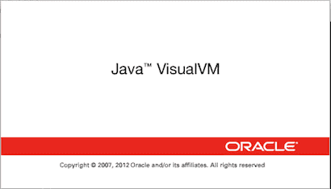

-
Gradle 是一个基于 Apache Ant 和 Apache Maven 概念的项目自动化构建工具。它使用一种基于 Groovy 的特定领域语言(DSL)来声明项目设置，抛弃了基于XML的各种繁琐配置。面向Java应用为主。
2020-11-22 19:22:32
-
Jenkins 是开源 CI&CD 软件领导者， 提供超过1000个插件来支持构建、部署、自动化， 满足任何项目的需要。
2020-11-20 15:50:38
-
GitLab 是一个用于仓库管理系统的开源项目，使用Git作为代码管理工具，并在此基础上搭建起来的web服务
2020-11-17 09:23:03
-

好处就是一般的开发人员不用在本地的 Maven 配置文件 settings.xml 文件中配置 Nexus 私服的账户信息，也没有上传 jar 包的权限。
2020-11-12 08:15:51
-
Nexus 是一个强大的 Maven 仓库管理器，它极大地简化了自己内部仓库的维护和外部仓库的访问。
2020-11-12 06:01:39
-
使用 mvn 打包后，是运行程序在 war包或jar包里面，依赖在可配置的 lib 目录
2020-11-12 06:01:03
-
trunk、branch、tag 的关系；怎么从 trunk 创建 branch 或 tag；trunk 更新代码后，如何同步到 branch 或 tag；branch 或 tag 修改了代码后怎么同步到 trunk ...
2020-11-12 05:58:30
-
Maven是一个项目管理工具，它包含了一个项目对象模型，一组标准集合，一个项目生命周期，一个依赖管理系统，和用来运行定义在生命周期阶段(phase)中插件(plugin)目标(goal)的逻辑。
2020-11-10 20:12:54
-
在 GitHub 无法连接的时候的解决方法
2020-11-10 20:09:03
-
Git is a free and open source distributed version control system designed to handle everything from small to very large projects
2020-11-10 18:32:38